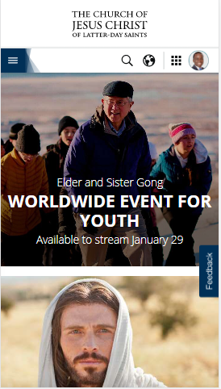

Hick's Law
The Church of Jesus Christ of Latter-day Saints
https://www.churchofjesuschrist.org The Church of Jesus Christ of Latter-day Saints provides more options available to a person visiting it, which might lead to taking longer time to decide which option is best. However, Hick's Law removes this barrier by applying Categorizing Choice which enable users to find items from higher categories, as if they were looking under sections in a library. Secondly, they apply Obscuring Complexity that breaks up long or complex processes into screens with fewer options. This generally improves the user experience.
Rule of Thirds
Optimize Marketing
https://optimizemarketing.net/Optimize Marketing website applies this principle in that the elements are arranged within a composition in a more balanced, harmonious, and aesthetically pleasing way. This leads to comfortable interaction with the site, and consistency in user interfaces.
Proximity
BYU-Pathway Worldwide
https://www.byupathway.org/This is accomplished on BYU-Pathway Worldwide site through the closeness of elements grouped in a page. Clearly there is organization of information and creation of a visual hierarchy which improves the usability of the site.